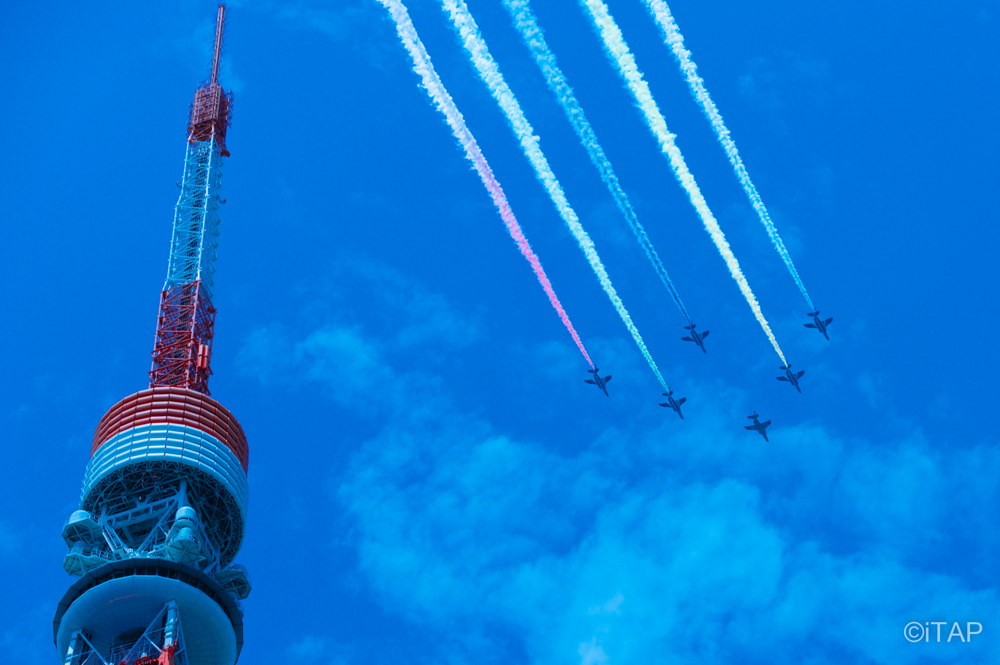

2021 SUPER GT Rd.8 富士スピードウェイ
 2021年11月27/28日に富士スピードウェイで開催された、「2021 AUTOBACS SUPER GT ROUND8 FUJIMAKI GROUP FUJI GT300KM RACE」の撮影に行ってまいりました。
狙ったのは、個人的に推しているCALSONIC（GT500）とグッドスマイルレーシング（GT300）。特にCALSONIC含むGT-R勢はラストランだったので、撮り納しました。
2021年11月27/28日に富士スピードウェイで開催された、「2021 AUTOBACS SUPER GT ROUND8 FUJIMAKI GROUP FUJI GT300KM RACE」の撮影に行ってまいりました。
狙ったのは、個人的に推しているCALSONIC（GT500）とグッドスマイルレーシング（GT300）。特にCALSONIC含むGT-R勢はラストランだったので、撮り納しました。
2020 TOKYO ブルーインパルス
 2021年7月23日の2020東京オリンピック開会式の日に合わせて、航空自衛隊のアクロバット飛行チーム「ブルーインパルス」がスモークを使った飛行を行いました。 五輪マークを描くのは57年ぶりで、生きている間に見れるのは最後かもということで、東京タワー周辺で撮影をしてきました。